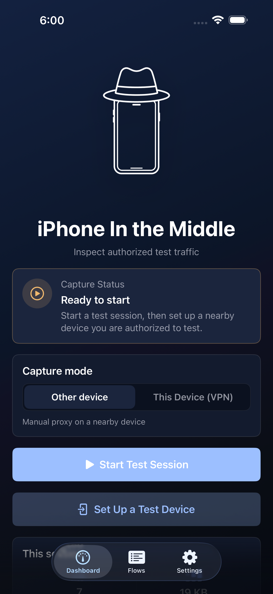
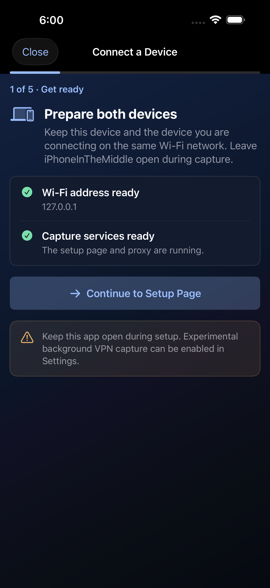
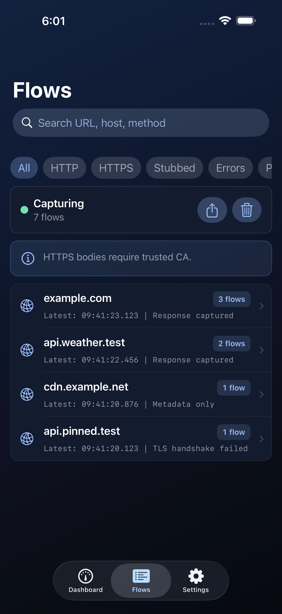
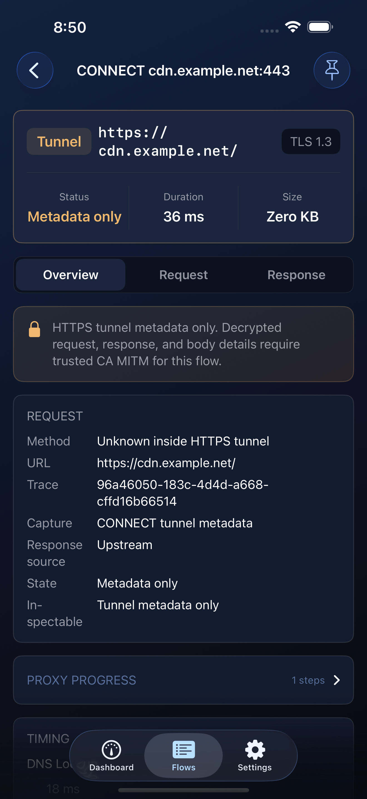
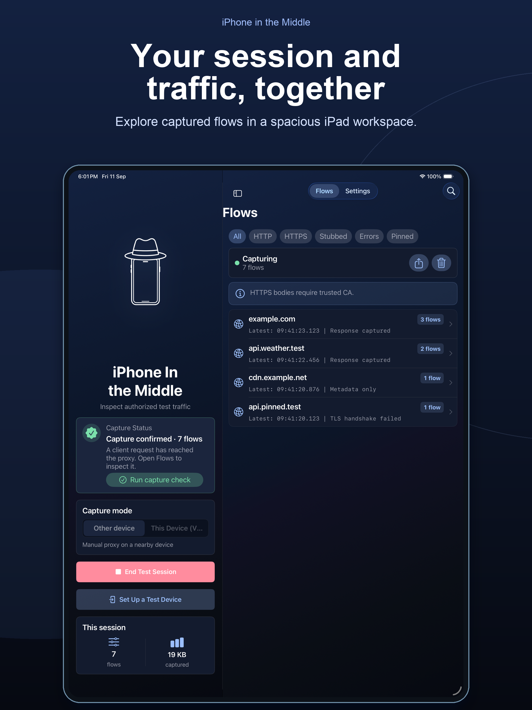
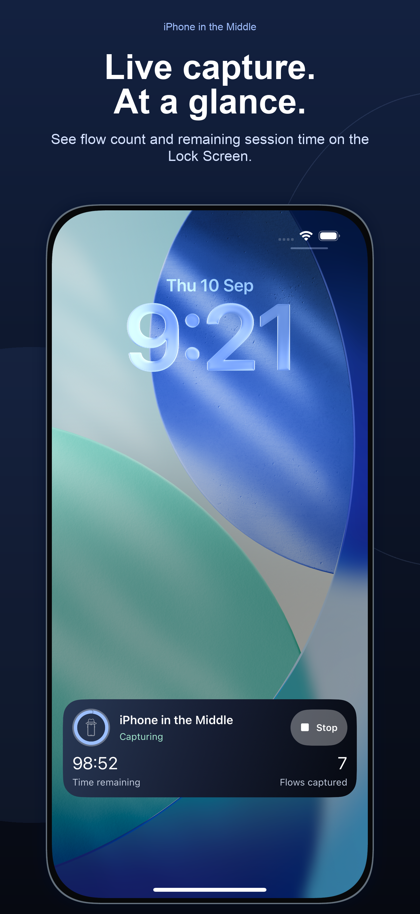

Capture flows
Record plain HTTP requests and HTTPS CONNECT tunnels, then inspect methods, status, timing, headers, and size.
iOS investigation toolkit
A learning-focused iOS tool for investigating, debugging, and testing traffic on devices, apps, accounts, and networks you own or are authorized to inspect.
For authorized testing only. Built with iOS platform limits in the open.

A deliberate boundary
iPhone in the Middle makes the distinction visible: plain HTTP can be inspected; encrypted HTTPS connections remain metadata-only unless a test client deliberately trusts the local development certificate.
What it does today
Record plain HTTP requests and HTTPS CONNECT tunnels, then inspect methods, status, timing, headers, and size.
Use the device setup flow, QR access, and separate web-server and proxy endpoints without guesswork.
Create narrowly scoped local JSON response overrides for matching requests, without contacting an upstream service.
Export filtered HAR files and proof reports with sensitive headers and common credential parameters redacted.
The current experience
These are current simulator captures produced by the project’s UI test harness—not concept screens.



Built for iPhone and iPad
iPhone in the Middle is available on iPhone and iPad. On supported iPhone models, an active session is also surfaced in a Live Activity and the Dynamic Island with the remaining time, retained-flow count, and a Stop Capture control.
The status surface helps you stay oriented—it does not keep capture running or promise background execution.


More than an app
This repository is also a learning lab for a disciplined, agentic engineering loop—small slices, repeatable checks, architecture review, and clear notes.